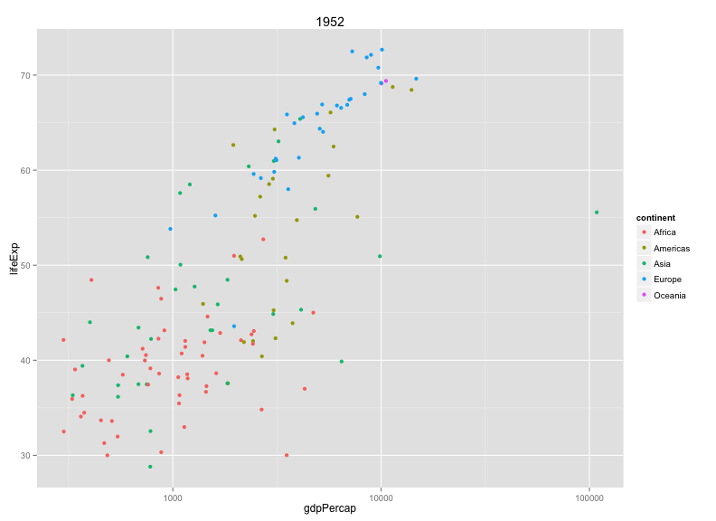

Writing R functions
Learning Objectives
- Why write functions
- How to define a function
- Defining graphing functions
- Scope and global variables
- Conditional statements
match.arg
Why?
There are two main reasons to write R functions.
- Avoid repeated code
- More readable code
As an example, consider this code to convert 65 degrees Fahrenheit to Celsius.
cel <- (65 - 32)*5/9If you then want to convert 100 degrees F, you'll have to retype all of that. And the code itself doesn't really explain it's purpose.
f2c <- function(fahrenheit)
{
celsius <- (fahrenheit - 32)*5/9
return(celsius)
}The definition of a function has three parts:
function(), containing any arguments (in other words, parameters or inputs) that the function takes- The body of the function (the bit that is executed when the function is called)
- The assignment of the function to an object; in this case we've called it
f2c
Having executed the above code, you'll note that there's now an object in your R workspace called f2c. (Try ls().)
You can use the function like any other R function:
f2c(65)[1] 18.33333
Note that you can even give it a vector of Fahrenheit temperatures.
f2c(c(100, 212, 32, -40))[1] 37.77778 100.00000 0.00000 -40.00000
Implicit return value
The function definition could actually be simplified. In R functions, an explicit return statement is not needed; the function will return the value of the last statement, so we could write:
f2c <- function(fahrenheit)
{
(fahrenheit - 32)*5/9
}And, actually, the curly braces aren't needed when the function has just one statement. We could have written:
f2c <- function(fahrenheit)
(fahrenheit - 32)*5/9Challenge
Write the opposite function, for converting from Celsius to Fahrenheit. Test that it works.
Functions for plotting
Functions are particularly useful when making graphs. You'll often want to make the same sort of graph multiple times, for example, a scatterplot of lifeExp vs gdpPercap for each of several different years. Rather than repeat the code multiple times, write a function that does the work and then call it several times.
Let's reload the gapminder data, as before.
gapminder <- read.csv("~/Desktop/gapminder.csv")Here's a function to make a plot for a particular year.
plot_year <- function(year=2007, data=gapminder)
{
library(dplyr)
library(ggplot2)
the_year <- year
gm_year <- filter(data, year==the_year)
ggplot(gm_year, aes(y=lifeExp, x=gdpPercap)) +
geom_point() + scale_x_log10()
}The function returns the ggplot object. You could add further enhancements after the fact.
plot_year(1952) + aes(color=continent) + ggtitle(1952)
Note that I passed the data as an argument and gave each argument a default value.
Challenge
Write a function that makes a plot of lifeExp vs gdpPercap across years, for a selected country.
plot_country <- function(country="China", data=gapminder)
{
library(dplyr)
library(ggplot2)
the_country <- country
gm_country <- filter(data, country==the_country)
p <- ggplot(gm_country, aes(y=lifeExp, x=gdpPercap)) +
geom_point()
p
}Scope
Variables defined within a function are destroyed on exit.
f1 <- function(x)
{
p <- 1
x + p
}
f1(5)[1] 6
pError in eval(expr, envir, enclos): object 'p' not found
The variable p exists within the function but doesn't exist outside the function. It's created anew each time you run the function.
The function arguments (that is, the inputs) exist only within the function, too. Continuing from the example above, note that x doesn't exist:
f1(5)[1] 6
xError in eval(expr, envir, enclos): object 'x' not found
How about if you refer to a variable that hasn't been defined in the function?
f2 <- function(x)
{
x + p
}
f2(5)Error in f2(5): object 'p' not found
p <- 3
f2(5)[1] 8
If you refer to a variable that you've not created within the function, R will look outside, to the "global environment".
You can use this to change variables sitting in your workspace.
f3 <- function(x)
{
p <- p + x
}
p <- 5
f3(5)
p[1] 5
You might use this to avoid passing data into a function, but please don't! The use of global variables can make your code unpredictable and hard to read.
Anything that the function needs should be input as an argument. Changes that the function makes should be through the return value.
Challenge
Consider the following code.
x <- 5
g <- function(y)
{
x <- 3
y + x
}
z <- g(5)What value will x have after this is executed?
- 3
- 8
- 5
Conditional statements
Returning to functions to make graphs: often it's nice to include some options in your function, for example, an argument that controls whether or not to add a smooth curve to the plot.
plot_year <- function(year=2007, data=gapminder, add_curve=TRUE)
{
library(dplyr)
library(ggplot2)
the_year <- year
gm_year <- filter(data, year==the_year)
p <- ggplot(gm_year, aes(y=lifeExp, x=gdpPercap)) +
geom_point() + scale_x_log10()
if(add_curve) {
p <- p + geom_smooth(method="loess")
}
p
}Here, we've add a conditional statement. If add_curve is TRUE, the bit of code in the curly braces, p <- p + geom_smooth(method="loess"), gets run. If add_curve is FALSE, it gets skipeed over.
The curly braces aren't needed here, since there is just one line within the code block that is run, but some people recommend that you always include them, for the sake of clarity.
Here's how you might use this:
plot_year(1952)
plot_year(1952, add_curve=FALSE)Challenge:
Add an option to your plot_country function, to use geom_line() as well as geom_point().
plot_country <- function(country="China", data=gapminder, add_line=FALSE)
{
library(dplyr)
library(ggplot2)
the_country <- country
gm_country <- filter(data, country==the_country)
p <- ggplot(gm_country, aes(y=lifeExp, x=gdpPercap)) +
geom_point()
if(add_line) {
p <- p + geom_line()
}
p
}Multiple-choice arguments
The geom_smooth function can take multiple arguments, for example, we might use "lm" (which will give a straight line) rather than "loess".
We could add a method argument that is passed to plot_year(), like this:
plot_year <- function(year=2007, data=gapminder, add_curve=TRUE, method="loess")
{
library(dplyr)
library(ggplot2)
the_year <- year
gm_year <- filter(data, year==the_year)
p <- ggplot(gm_year, aes(y=lifeExp, x=gdpPercap)) +
geom_point() + scale_x_log10()
if(add_curve)
p <- p + geom_smooth(method=method)
p
}It can be helpful to give multiple choices. For example, we could drop the add_curve argument and allow method to be either "lm", "loess", or "none" (with no curve plotted in the latter place.
The function match_arg() is useful here. You give a vector of choices as the default value for the argument, and match_arg will ensure that the selected choice is among those allowed.
plot_year <- function(year=2007, data=gapminder, curve=c("none", "loess", "lm"))
{
curve <- match.arg(curve)
library(dplyr)
library(ggplot2)
the_year <- year
gm_year <- filter(data, year==the_year)
p <- ggplot(gm_year, aes(y=lifeExp, x=gdpPercap)) +
geom_point() + scale_x_log10()
if(curve != "none")
p <- p + geom_smooth(method=curve)
p
}Here's how you might use this:
plot_year(1952, curve="none")
plot_year(1952, curve="lm")Challenge
Modify your function to take an argument type with possible values "points", "lines", or "both", indicating whether to use geom_point(), geom_line(), or both.
The ... argument
The geom_smooth() argument also has an argument se (taking values TRUE or FALSE) that indicates whether the confidence bands should be plotted or not. We might add this to our function as an argument. Or, we could include an argument ... to cover any other things that we might want to pass to geom_smooth
plot_year <- function(year=2007, data=gapminder, curve=c("none", "loess", "lm"), ...)
{
curve <- match.arg(curve)
library(dplyr)
library(ggplot2)
the_year <- year
gm_year <- filter(data, year==the_year)
p <- ggplot(gm_year, aes(y=lifeExp, x=gdpPercap)) +
geom_point() + scale_x_log10()
if(curve != "none")
p <- p + geom_smooth(method="curve", ...)
p
}Here's how you might use this:
plot_year(1952, curve="loess")
plot_year(1952, curve="loess", se=FALSE)Resources
- See the chapter on functions in Hadley Wickham's Advanced R book, also available on paper.